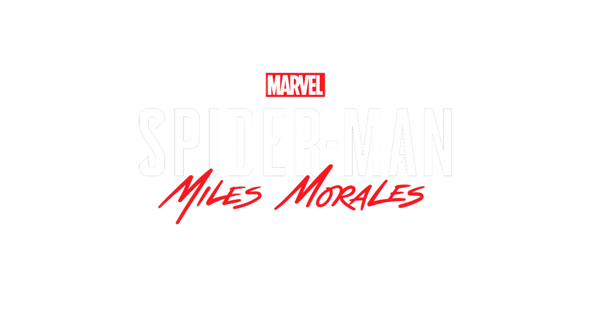

Na mais nova aventura do universo de Marvel's Spider-Man, o adolescente Miles Morales está se adaptando a um novo lar enquanto segue os passos de seu mentor, Peter Parker, como novo Spider-Man. Mas quando uma violenta disputa de forças ameaça destruir sua vizinhança, o aspirante a herói percebe que com grandes poderes também vêm grandes responsabilidades. Para salvar a Nova York da Marvel, Miles deve reconhecer e assumir o título de Spider-Man.